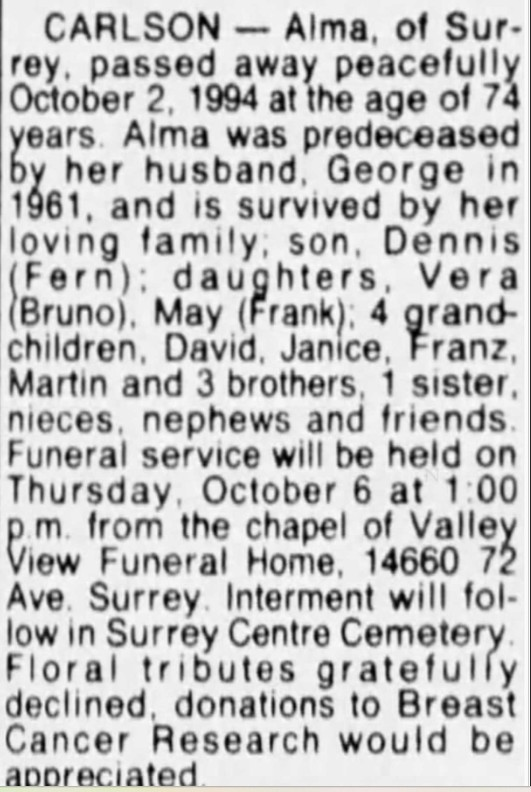
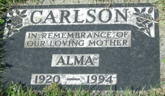

Gustave George Carlson.

Född 10 maj 1912 i Alberta, Kanada 3 .
Död 11 nov 1961 i Surrey, Vancouver, British Columbia, Kanada 3 .
|
Född
15 feb 1920
i Hay Lakes, Alberta, Kanada
1
.
Död 21 okt 1994 i Surrey, Vancouver, British Columbia, Kanada 1 . |
|
Alma Busenius
Född 15 feb 1920 i Hay Lakes, Alberta, Kanada 1 . Död 21 okt 1994 i Surrey, Vancouver, British Columbia, Kanada 1 . |
|||

Dödsannons för Alma Busenius 1994

|
Gift
1943
i Hay Lakes, Alberta, Kanada
2
.
Gustave George Carlson.
Född 10 maj 1912 i Alberta, Kanada 3 . Död 11 nov 1961 i Surrey, Vancouver, British Columbia, Kanada 3 . |
Framställd 12 aug 2026 med hjälp av Disgen version 2025.